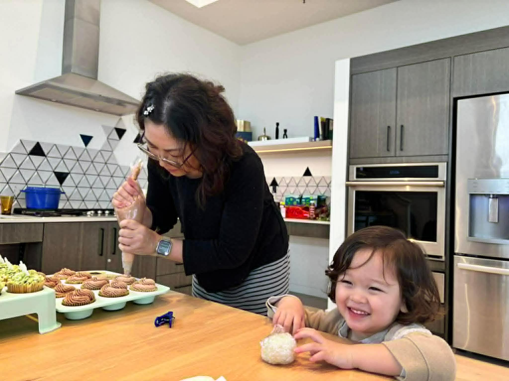
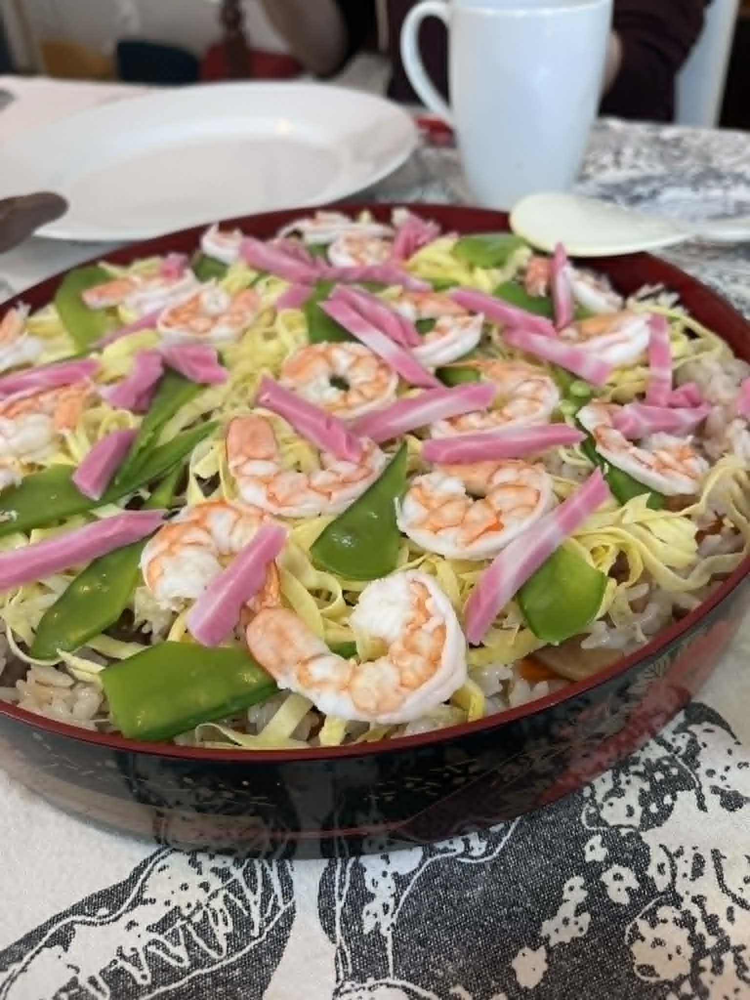
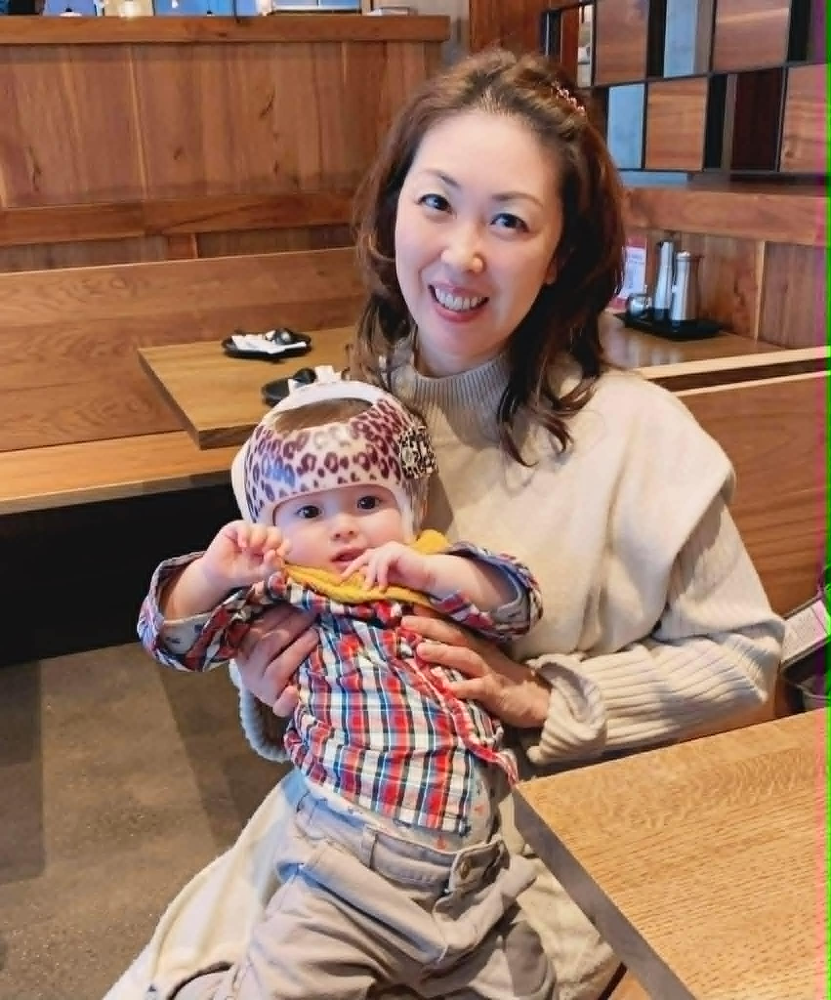
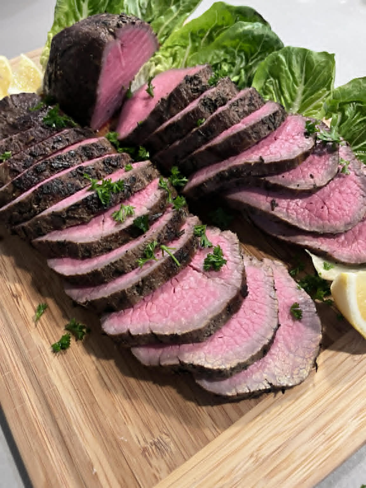
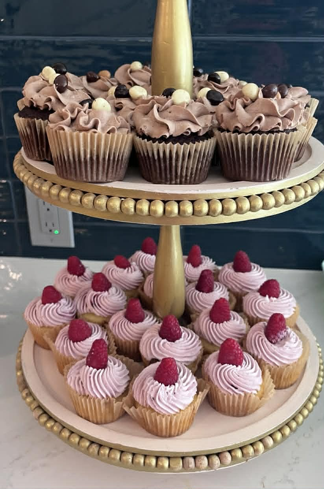
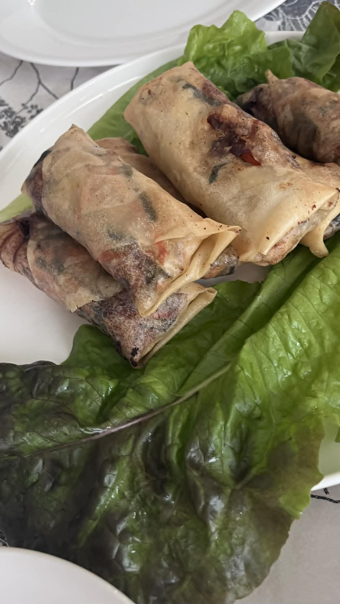

Home Chef · Nanny · Family Support
From weekly meal prep to private dining and childcare — a complete support service for your busy family.
Serving Redmond · Bellevue · Seattle · Eastside
Get in TouchWhat I Offer

Weekly meal preparation and make-ahead cooking tailored to your family's tastes. Menu planning and grocery shopping available upon request.

Warm, attentive care for your little ones. Group childcare and mama groups also welcome.

Birthday parties, home dinners, girls' nights — restaurant-quality food without leaving home. Menu customized to your event.


About
I work in catering while also serving families as a Home Meal Personal Chef — providing meal prep and home party cooking to support busy families at the dinner table.
Drawing on my experience as a nanny and family support provider, I strive to offer services that families with young children can trust and rely on. I'm also continuing my studies toward a Postpartum Doula certification, so that new families and busy households can find a little more breathing room.
As a mother raising my son, I know firsthand how much daily meals and family support matter. I want to bring every household a table where you can relax — and a little more ease in your day. "Richer family time, through delicious food." That's the heart behind every dish I make.
Available in Japanese and English
Reviews
"We hired Wakako's catering service for my husband's and our friend's joint birthday party at our home, and it exceeded all of our expectations. She came to our house and prepared an incredible meal for 10 adults and 3 kids, making the entire experience feel effortless and special. Every single dish, from the appetizers to the main courses, was absolutely delicious. The flavors were outstanding, and our guests couldn't stop talking about how amazing the food was. Several people even commented that it was better than what they've had at many restaurants. Being able to enjoy restaurant-quality food in the comfort of our own home, without any of the stress of cooking or hosting, made the evening so much more enjoyable. I highly recommend Wakako's catering service for anyone looking to host a memorable event at home. We would definitely book her service again!"
"I've had Wakako cook for several small parties. Whenever I was unsure what to serve, she offered suggestions across a wide range of cuisines and guided me to the best choice while incorporating my wishes. Every dish she makes would take too much time and effort for me to prepare myself, yet she creates them quickly — and the result is restaurant-quality in both presentation and taste. I'm always impressed. Going forward, I'd love to have her prepare not just party food, but everyday meal-prep too. Balancing work and childcare is tough, but I truly believe Wakako's support will help me get through it."
"I started asking Wakako for help as a sitter when my second child was born. She always put me and my baby first, and I could leave everything in her hands with complete peace of mind. As my children grew, I began asking her for housekeeping help too — mainly cooking — and she still comes about twice a month to prepare dinner. My two kids have completely warmed up to Wakako, and our whole family trusts her deeply. She is truly someone you can rely on."
Get in Touch
Whether you need weekly meal prep, childcare, or help planning your next gathering — I'd love to hear from you.
Serving Redmond · Bellevue · Seattle · Eastside and surrounding areas